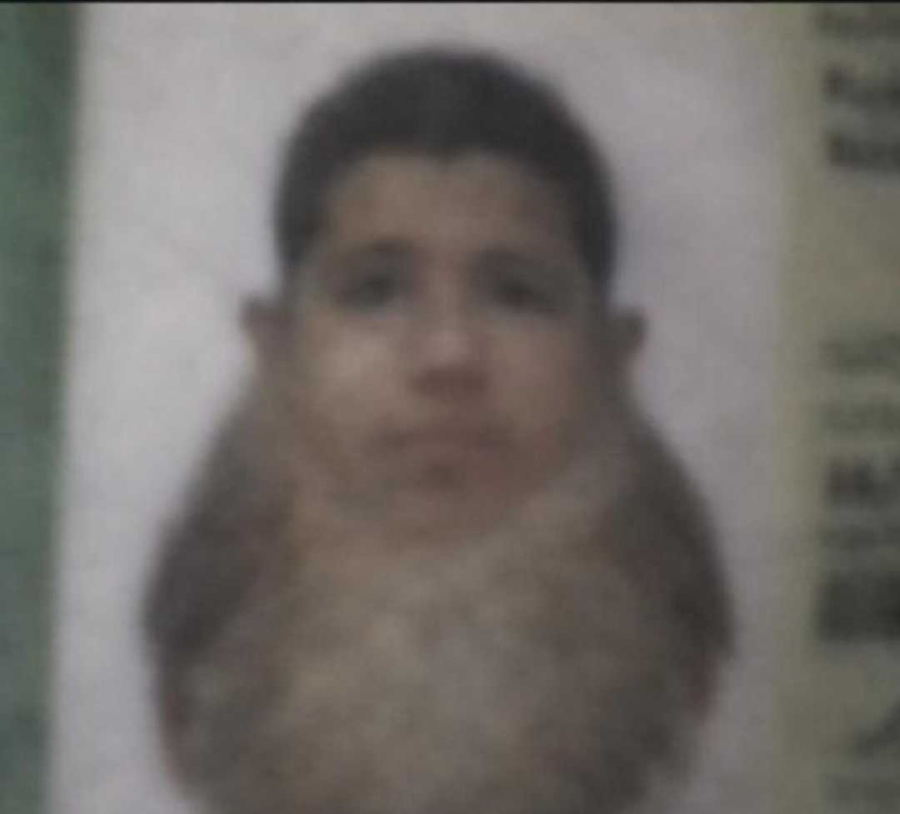
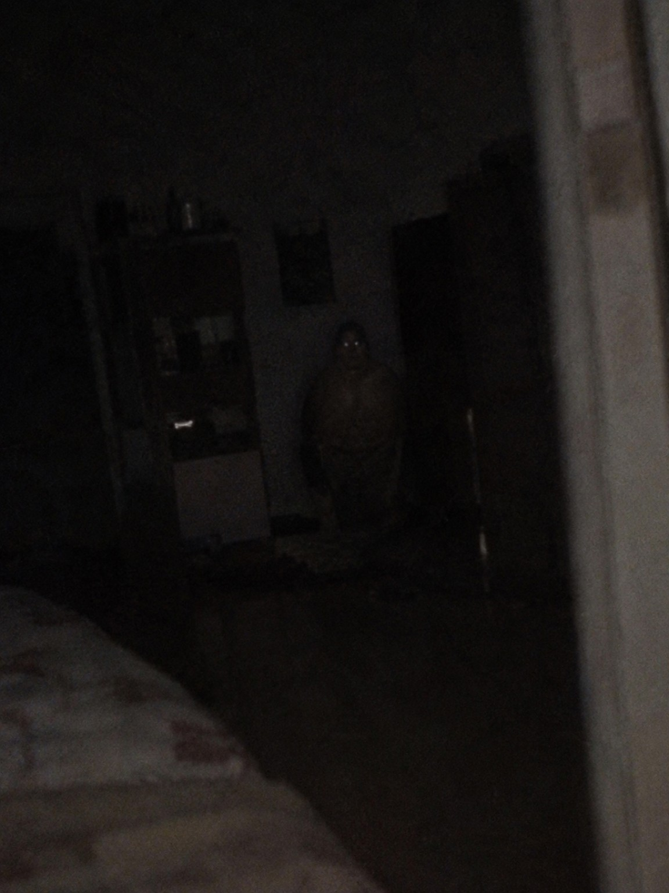
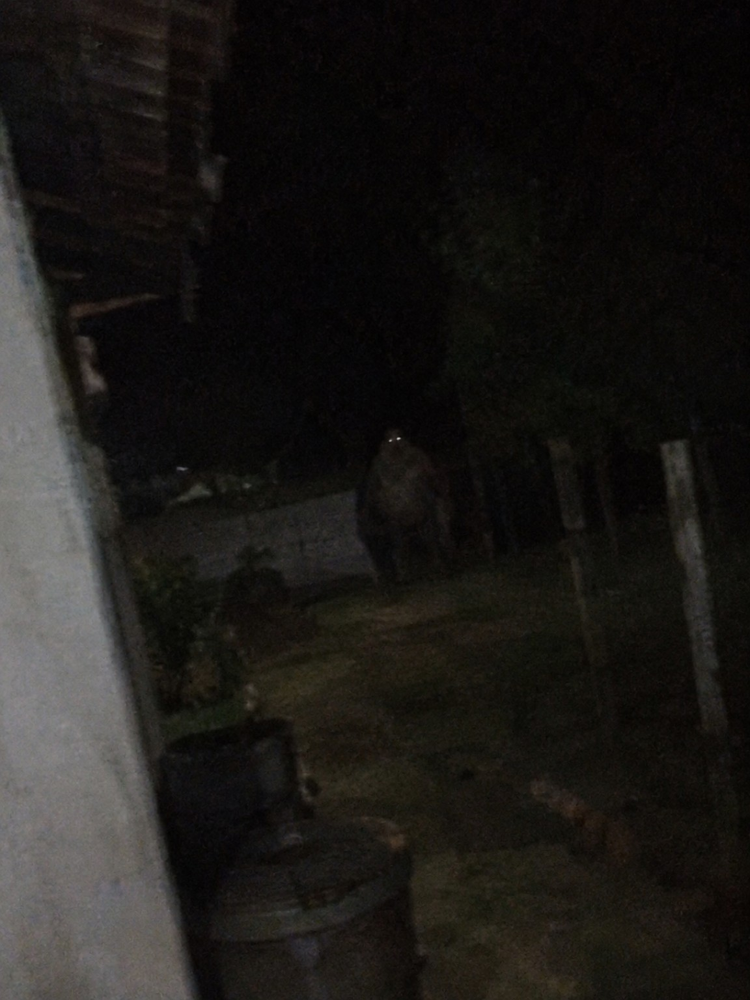
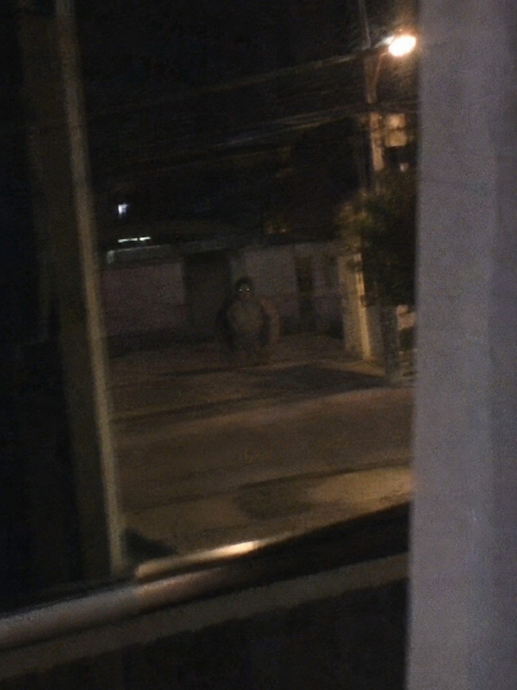
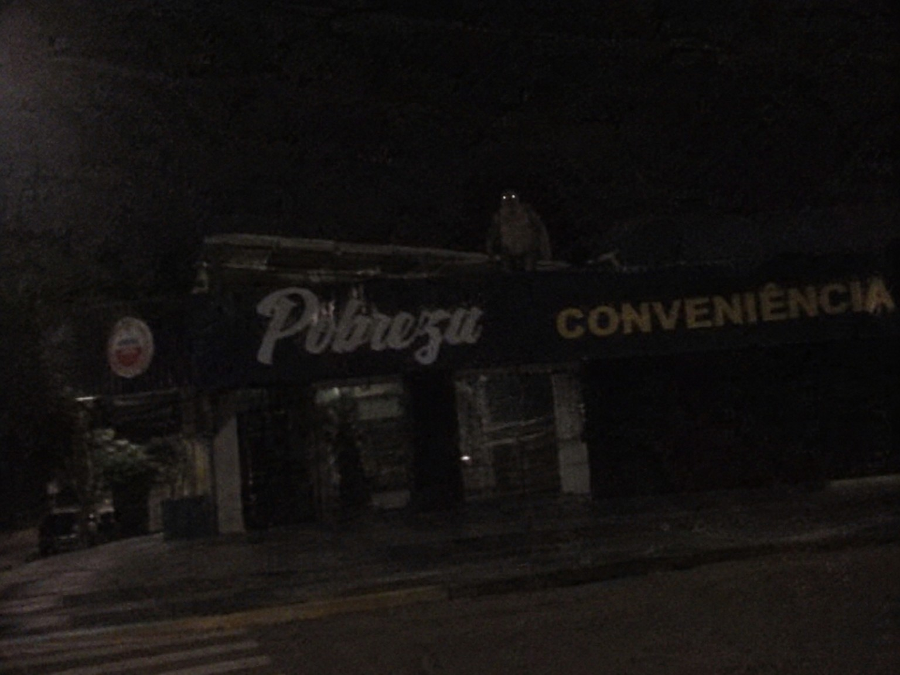

Passarex
Passarex é o nome associado a relatos sobre uma suposta entidade com corpo semelhante ao de uma ave e cabeça de aparência humana. Descrições atribuídas a observadores mencionam uma anatomia incomum e aparições em ambientes externos, geralmente registradas à distância. A origem dos relatos e a natureza da entidade permanecem sem confirmação independente.
Os materiais associados ao nome incluem fotografias de baixa definição, esboços, relatos orais e referências a ocorrências específicas. Parte do conteúdo também menciona episódios antigos e personagens relacionados, embora a procedência de alguns documentos ainda não tenha sido estabelecida.
Características e aparência
As descrições atribuídas a testemunhas caracterizam o Passarex como uma criatura de anatomia híbrida: corpo coberto por penas, pernas e pés de ave e cabeça com traços humanos. Como os relatos não são uniformes, detalhes de proporção, coloração e comportamento podem variar.
- Forma: corpo predominantemente aviário com cabeça de traços humanos.
- Representação visual: desenhos a lápis, papel envelhecido, fotografias escuras e imagens de baixa qualidade.
- Comportamento descrito: relatos mencionam permanência silenciosa, observação à distância e aparições inesperadas; não há confirmação independente desses padrões.
- Relatos associados: há também narrativas de caráter humorístico e referências a episódios históricos cuja relação com a entidade não foi verificada.
Registros visuais
As imagens abaixo foram catalogadas entre os materiais associados ao Passarex. A data, o local exato e as circunstâncias de produção de parte dos registros não foram confirmados de forma independente.





Incidente 1367
O Incidente 1367 é a designação encontrada em materiais que mencionam possíveis aparições do Passarex nas proximidades de Naviraí, no Mato Grosso do Sul. Relatos associados ao caso descrevem movimentação incomum e a circulação de comunicados cujo emissor e autenticidade ainda não foram confirmados.
Algumas versões do relato mencionam 67 supostas vítimas em um intervalo de três semanas. O número aparece em materiais atribuídos ao caso, mas não foi possível localizar confirmação independente ou documentação pública que comprove essa informação.
Em versões do comunicado, moradores seriam orientados a evitar áreas abertas após o anoitecer. Não há confirmação independente sobre a autoria, a circulação oficial ou a validade dessas orientações.
Passarex Fiu Fiu
Passarex Fiu Fiu é uma denominação encontrada em narrativas associadas ao Passarex. Segundo um relato de caráter histórico-popular, a entidade teria avistado terras a oeste em 1491 e emitido o sinal “FIU FIU”, interpretado como uma orientação para navegar naquela direção. Não foram identificadas fontes históricas independentes que confirmem esse episódio.
O episódio é atribuído a relatos posteriores e sua documentação permanece incerta. A associação com as navegações do século XV não foi corroborada por fontes históricas conhecidas.
Douradex
Douradex é uma figura mencionada em materiais relacionados ao Passarex. Alguns relatos o descrevem como acompanhante ou auxiliar em episódios de navegação, associado à frase “É por ali, confia”. A relação entre as duas entidades e a origem dessa denominação ainda não foram esclarecidas.
Estética e narrativa
Os materiais catalogados apresentam registros de natureza variada: descrições de aparência, imagens de baixa qualidade, relatos de avistamento, comunicados atribuídos a órgãos públicos e narrativas históricas. A diferença de estilo e procedência entre esses itens exige cautela na interpretação.
As fotografias e documentos são mantidos como itens de referência. Sempre que não houver confirmação de origem, data ou autoria, essa incerteza é indicada nas legendas e descrições.
Fontes e documentos relacionados
Os itens abaixo são mencionados em relatos e materiais associados ao caso. Sua autenticidade, autoria e procedência não foram verificadas de maneira independente.
- Arquivo Naviraí — Dossiê 1367. Documento atribuído ao conjunto de registros do incidente; órgão emissor e autenticidade não confirmados.
- Comunicado de Segurança Pública: Incidente 1367. Transcrição atribuída a uma gravação de alerta; não há confirmação de emissão por autoridade pública.
- Caderno de Campo do Passarex. Conjunto de esboços e anotações cuja autoria e data permanecem desconhecidas.
- Relatos sobre Passarex Fiu Fiu e Douradex. Narrativas de circulação não determinada, com referências a episódios de navegação e personagens associados.
As imagens deste arquivo foram reunidas para catalogação. Não se atribui a elas data, autoria ou procedência que não estejam documentadas.